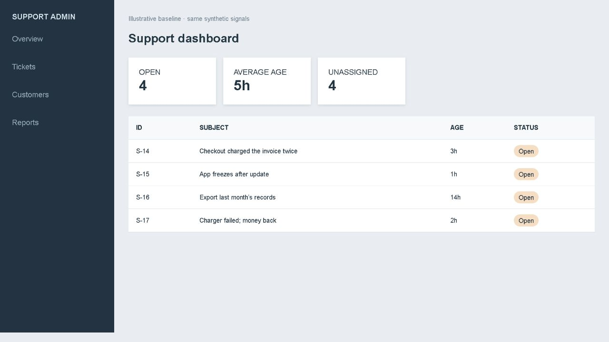

THE NEXT DECISION, ALREADY SURFACED
The system initiates a proposed task on its own. A human decides before any local action is recorded. No email or external API is sent.
Why this appeared
Recent decisions
WHAT THIS REPLACES
From hunting through a dashboard to reviewing one next move.
The image is a screenshot of a separate synthetic baseline interface. This demo uses the same four sample support signals.
